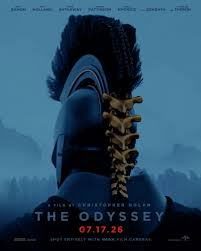

The Odyssey (2026) Review – Christopher Nolan Misses the Mark
Director: Christopher Nolan • Release: 2026 • Runtime: 2 h 53m
Review
I really wanted to like The Odyssey. Christopher Nolan has proven himself to be a talented director, and I've enjoyed many of his films over the years. Because of that, I went into this expecting an epic adventure, despite my worry of it being a complete train wreck due to casting. I walked away, not to my surprise, disappointed.
There are quite a few issues I have. The biggest being the pacing. This movie drags. There are long stretches where it feels like nothing is happening, and by the time the story finally reaches its emotional payoff, I was exhausted. The ending, where Odysseus reveals himself by stringing the bow before shooting through the axes, should have been an incredible moment. It still has some impact, but it would have hit much harder if the movie had gotten there much sooner.
I wasn't the only one feeling it, either. During the slower sections I found myself looking around the theater, noticing other audience members checking their phones or looking distracted. It never felt like the film had the audience fully engaged.
I'm not going to explain the story of The Odyssey itself. Most people already know it's about Odysseus' long journey home and the consequences of his actions. Instead, I'm judging Christopher Nolan's interpretation.
Casting
The casting is very hit-or-miss, more misses than hits.
Matt Damon does a solid job. Anne Hathaway is fantastic, and honestly, she steals every scene she's in. Robert Pattinson also surprised me. He plays his character with just the right amount of cowardice and manipulation, and I really enjoyed his performance.
Unfortunately, several other casting choices completely missed the mark for me.
Tom Holland never stopped feeling like Spider-Man. No matter what scene he was in, I couldn't separate him from that role. I never believed I was watching a legendary Greek hero. I can say the same for Zendaya.
Jon Bernthal also didn't work for me. I've never been a big fan of his acting because I feel like he plays the same character in almost everything he's in. Since Spider-Man: Brand New Day released around the same time, all I could picture was Spider-Man and the Punisher standing together again, which pulled me out of the movie.
Elliot Page's performance also didn't work for me. I know this is going to be one of my more controversial opinions, but I'm reviewing the film honestly. Even though the movie casts Elliot as a male character, I never believed the performance. To me, it felt forced rather than natural, and I never bought the character for a second. Every scene pulled me out of the movie instead of drawing me in because the performance simply didn't fit the role in my eyes. The good news, from my perspective, is that the character dies very early in the film, sadly she comes back to make another appearance later. Only to show me and reassure me that she is in fact not a man and is in fact a terrible actress.
Lupita Nyong'o is another casting choice that just didn't work for me. I respect her as an actress and have enjoyed her in other films, but this wasn't the role for her. She felt completely out of place, and I never believed she belonged in this world.
Something I did like:
There are only two scenes that truly stood out.
The first is the witch's island. Visually, it's beautiful. Her magic affecting the crew is easily the most memorable sequence in the entire film. If someone asks me years from now what I remember from The Odyssey, this will be one of the first scenes that comes to mind.
The second is Odysseus revealing himself. The moment he strings the bow and plucks the string is genuinely powerful. You can feel the tension in the room before he proves who he really is. It's the movie's strongest emotional payoff, even if the slow pacing weakens its impact.
What Didn't Work:
The Cyclops sequence was another disappointment. I know Nolan reportedly invested heavily in creating a practical creature, but it never looked like the intimidating Cyclops I imagined. Instead, it looked more like a giant with a badly deformed face. It lacked texture as well, making it appear flat. It reminded me of a baby doll that has been stripped of its clothing, only showing its pale cloth body. Rather than being amazed, I spent the scene wondering what I was actually looking at.
The movie also spends far too much time sailing across the ocean. I understand that the journey is important, but we didn't need to watch so much of the travel between islands. The story could have been much tighter by trimming those sequences.
It also seemed to focus on the suitors that was trying to grab Odysseus thrown form him. Making it feel way more like a drama than an epic.
Agamemnon's armor constantly distracted me. Every time I saw him, I felt like I was waiting for a boxing match from Real Steel. He looked more like a robotic Batman than someone from Greek mythology, and the design felt completely out of place. Honestly it felt cartoonish.
Cinematography and Technical Issues
The cinematography is fine, but I expected much more from Christopher Nolan. I mean I honestly can not believe that I am saying that it’s fine when talking about Nolan. I’m as shocked as anyone.
The action scenes rarely feel urgent. Instead of pulling me into the battles, the camera often keeps me at a distance. The Trojan Horse attack especially felt awkward. Something about the sound design and the choreography didn't work for me. There are moments where it seems like soldiers could have easily alerted everyone around them, yet they don't. It made the scene feel illogical and took me out of the experience.
The biggest technical issue I noticed was the focus pulling.
For a production of this size, I expected nearly flawless focus work. Instead, there are several scenes—particularly with Anne Hathaway and Robert Pattinson—where the focus noticeably overshoots, then corrects itself. Sometimes subtle enough that many viewers may never notice it, but other times its pretty noticeable. For someone who pays close attention to camera work, it was distracting every time it happened.
Final Thoughts
I honestly expected far more from Christopher Nolan.
The performances are inconsistent, the pacing is painfully slow, several action scenes lack excitement, and outside of two memorable moments, very little of the film left a lasting impression.
If you haven't seen it yet, I wouldn't recommend rushing to the theater. This feels like the kind of movie that's better watched at home while you're folding laundry, cleaning the house, or doing something else, dropping in for the scenes that actually matter.
I hate saying that about a Christopher Nolan film, but that's how I felt. His epic left me not feeling epic at all.
Rating
Final Score: 3/10
Audience Feedback
I'd love to hear your feedback and thoughts on the film. Email me at daniel@nobodycritics.com .